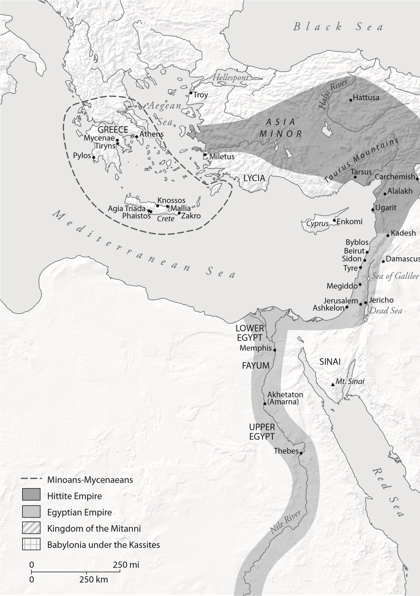
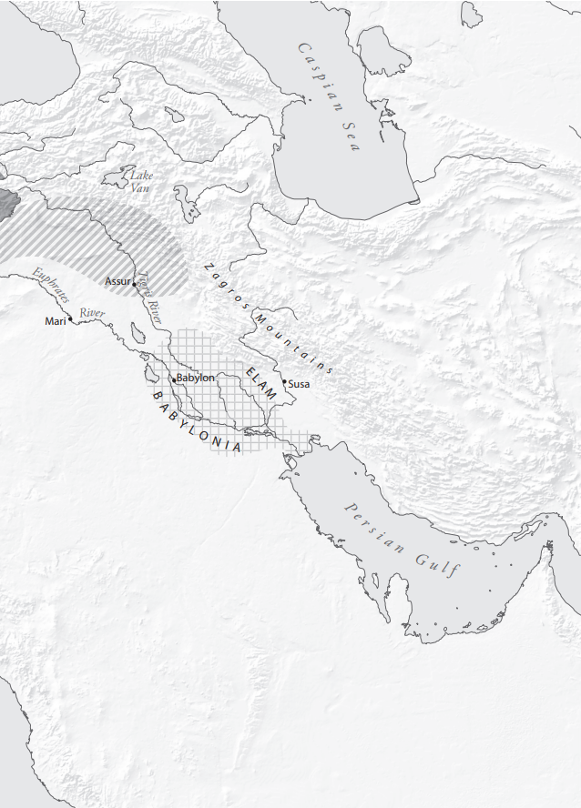

Eric H. Cline
revised and UPDATED


Map of the Late Bronze Age civilizations in the Aegean and Eastern Mediterranean.
This volume is part of a series called Turning Points in Ancient History. Each book in the series looks at a crucial event or key moment in the ancient world. Always volatile and frequently dramatic, these were points at which history took a new direction. whether famous or forgotten, they are moments that matter. Our focus is on why and how, as well as on when. Series authors are scholars who know how to tell a story and narrators who have the latest research at their command.
Turning Points in Ancient History reflects wide-ranging trends in the study of the ancient world. Each book integrates archaeology and classic texts; that is, it combines the evidence of material and literary culture. Books look both at the elite and at ordinary lives. The series does not confine itself strictly to the Greco-Roman world, though that certainly is at its core. We examine as well neighboring peoples of Greece and Rome, the non-Greco-Roman people of Greco-Roman lands, and civilizations and peoples of the wider ancient world, both East and West.
This is an exciting time for ancient history. Now more than ever, we realize that understanding the ancient past is essential to our understanding of the pre sent and just plain fascinating.
Few events had a bigger impact on the evolution of the ancient world than the end of the Bronze Age. It was then that the great kingdoms and city-states of prehistory fell. They left behind stirring monuments like the Pyramids and dimly remembered tales such as the ones that were eventually reshaped into the Trojan War saga. To those who lived through it, the calamity seemed to be the end of the world. Yet the end of the massive palatial states of the Bronze Age opened the door for the growth of a new world on a more human scale, the world of the first millennium BC, a world in which we are still at home today.
1177 B.C.: The Year Civilization Collapsed begins with the invasion of Egypt by the Sea Peoples in 1177 and moves outward and backward. It takes us to the Late Bronze Age in the glory days of the fifteenth century BC and surveys a range of civilizations from Mesopotamia to Greece, and from Israel to the Hittites. Then it proceeds over the centuries to the processes, people, and events that brought down a world. Throughout there is a fingertip feel for the evidence. The scale of detail is as grand as the sack of the Syrian port city of Ugarit around 1190 BC, and as intimate as a CT scan of King Tut’s skeleton and the infection after a broken leg that probably killed him.
With verve, wit, and a sense of drama, Eric Cline explores the echoes between the Late Bronze Age and our own time, from economic crisis and climate change to war in the Middle East. The year 1177 BC might not be a house hold word, but it deserves to be.
Barry Strauss